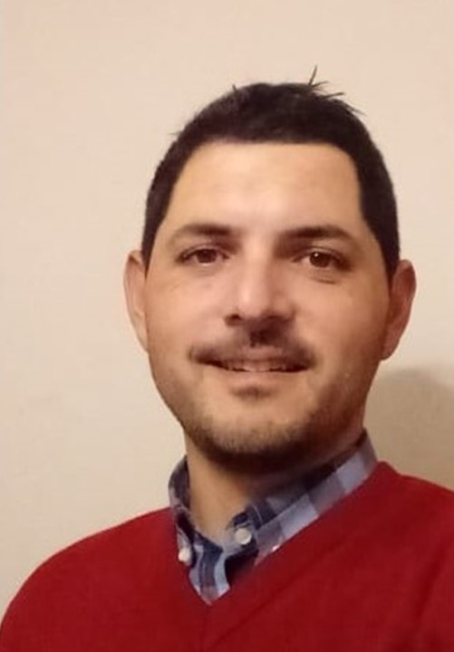

ARGUELLO CASAS NICOLAS
Domicilio: Laborde 9383, B° Villa Rivera Indarte.
Provincia: Cordoba.
Localidad: Cordoba.
CP: 5000
email: nicoarguello36@gmail.com
tel: 351-6508538
Datos Personales
Fecha de Nacimiento: 08 de Agosto de 1985.
DNI: 31769609.
Estado Civil: Soltero.
Nacionalidad: Argentino.
Formacion Academica
Estudios primarios y secundarios en colegio La Salle. Titulo bachiller en gestion y administracion de empresas.
Ingenieria en Telecomunicaciones, Universidad Blas Pascal (25 materias aprobadas). Estudios sin terminar.
Experiencias Laborales
Empresa: Redes y Comunicaciones S.R.L
Técnico Satelital, julio 2013 – enero 2019
Destacados: En base a la calidad de los trabajos realizados, siempre he conseguido un numero bajo de servicios técnicos sobre instalaciones y reconocimientos por parte de la empresa por trabajar cumpliendo con los estándares de calidad esperados.
NETMED SAS
Técnico Instalador FTTH, diciembre 2019 – agosto 2020
Destacadas: He capacitado a los nuevos ingresantes en todo lo concerniente al trabajo técnico.
También me he encargado de controlar que las instalaciones cumplieran con las normas de instalación exigida por la empresa, a fin de brindar la mejor calidad al abonado.
Habilidades
Técnico Instalador: servicio de TV e internet.
Labores de alta y mantenimiento cliente final. Servicio técnico.
Cableado hasta PTR/PTRO
Instalación de equipos y asesoramiento clientes.
Planificación del trabajo (según el recorrido), a fin de optimizar los tiempos.
Confección de planillas e informes sobre trabajos realizados
Responsable de vehículos de las compañías.
Cumplimiento de objetivos.
Pasatiempos
Jugar Futbol
Comer con amigos
Tareas manuales (reparar objetos)
Jugar con los perros
Iniciativa
Empece a estudiar programación, porque es algo que me ha costado mucho en el pasado, y en vista de como evoluciona la tecnologia creo que debia darme una nueva oportunidad de aprender y asi poder integrarme en el mundo de la programación.
Espectativas
Espero poder aprender a programar, para ampliar mis conocimientos y asi desenvolverme dentro de otro marco laboral, que me permita evolucionar a nivel profecional y personal.